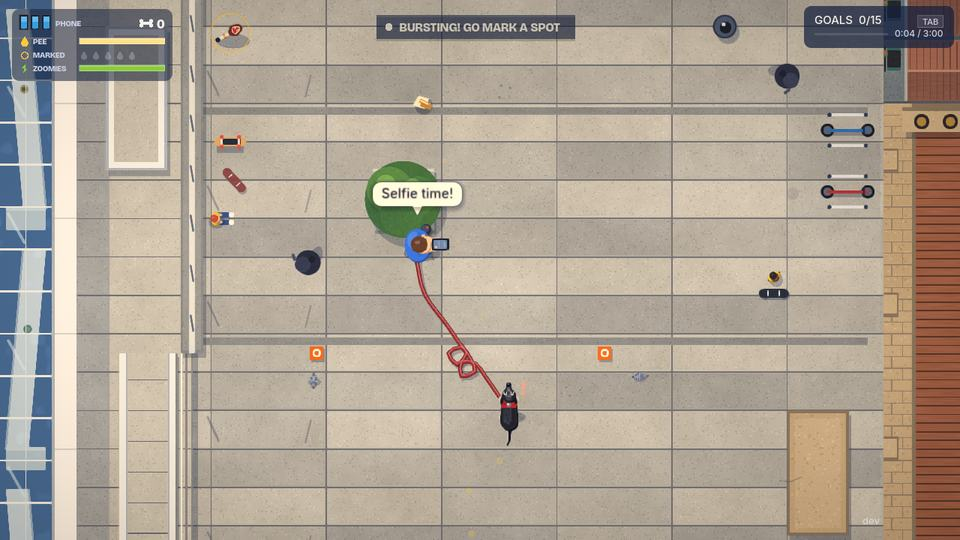
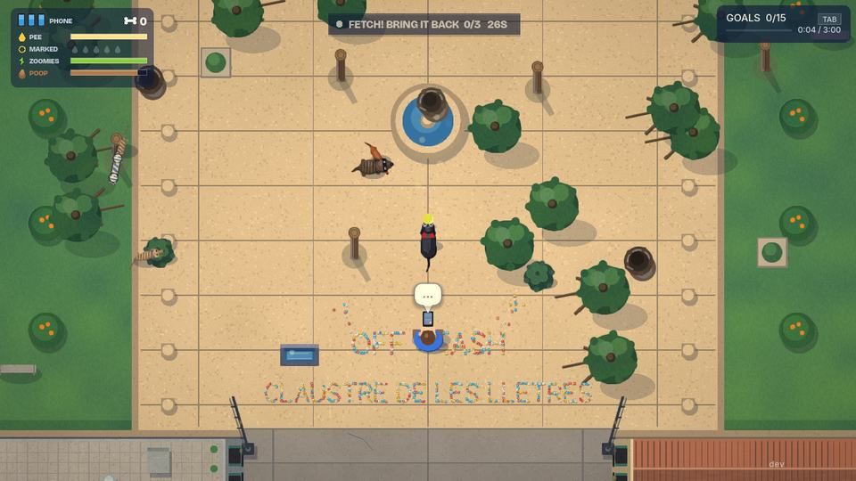

The skate plaza outside the white museum
Plaça dels Àngels in front of the stark white museum facade, Barcelona's unofficial capital of street skateboarding. Smooth marble ledges are made to be ground along while dodging dropped boards and lamps on the way to Claustre de les Lletres.

